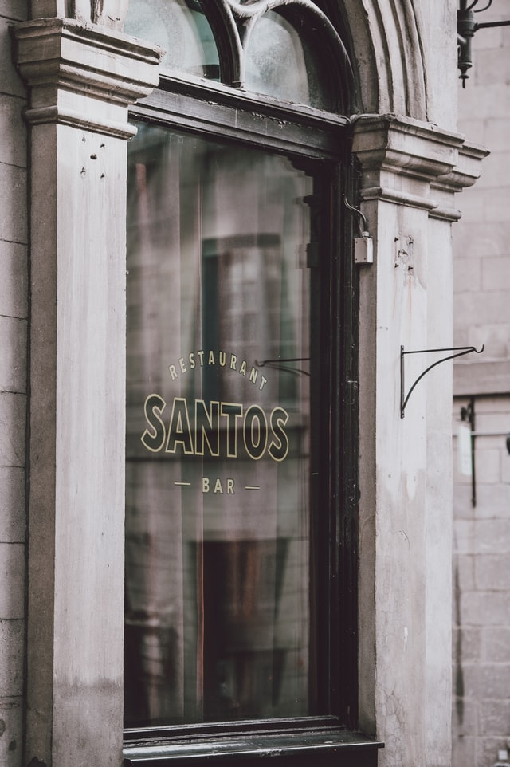
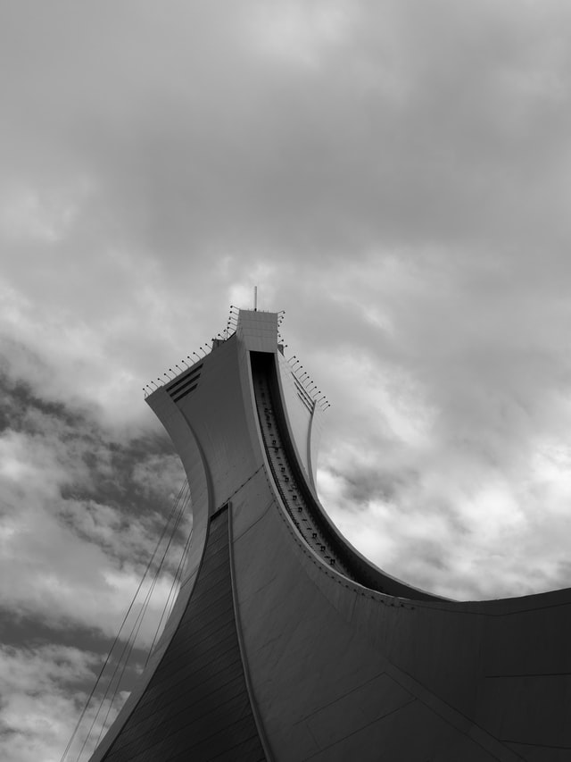

Bonsecours Market (French: Marché Bonsecours), at 350 rue Saint-Paul in Old Montreal, is a two-story domed public market. For more than 100 years, it was the main public market in the Montreal area. It also briefly accommodated the Parliament of United Canada for one session in 1849.


Montreal's culinary landscape is perhaps most influenced by the diverse fabric of its ethnic communities. Italian, Greek, Jewish, and Lebanese communities have contributed to the mix of Montreal's restaurants. Jewish contributions include Montreal smoked meat sandwiches and Montreal style bagels.

Olympic Stadium (French: Stade olympique) is a multi-purpose stadium in Montreal, Canada, located at Olympic Park in the Hochelaga-Maisonneuve district of the city. Built in the mid-1970s as the main venue for the 1976 Summer Olympics, it is nicknamed "The Big O".